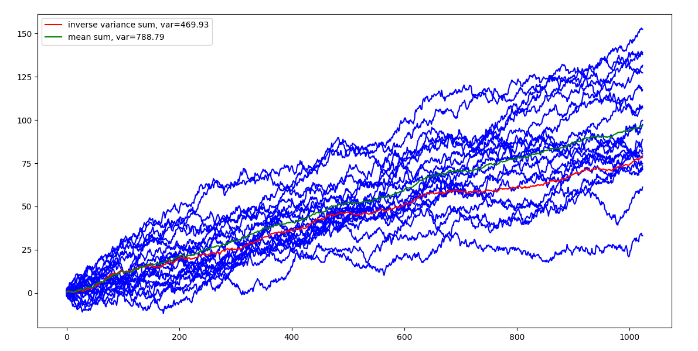

信息聚合漫谈：加权平均思路
在CNN中，常常使用AveragePooling方法和基于AdditiveAttention的加权Pooling方法。事实上，在深度学习中常常使用加权平均来聚合向量序列，如把词向量序列聚合成句向量；还有如时间序列的平滑处理，例如股票投资中的均线，量化投资中的趋势因子代理指标。
本文不是纯粹NLP中词向量相关文章，只是从数学角度介绍，有哪些加权平均方案。
随机变量或随机向量序列$X=[X_{1},X_{2},\dots,X_{n}]$，对其进行加权平均能够获得信息聚合意义上的向量，不同的加权方法有着不同的物理意义和应用。例如词向量序列，在GlobalMeanPooling或GlobalMaxPooling下获得不同的信息聚合上的意义。
简单平均
最简单的就是直接平均，
在神经网络中，直接sum也可以当做加权平均，因为下游网络也会scaling回来。在深度学习中对应的就是GlobalMeanPooling。
这种平均方法如果在无限长的序列（源源不断）中，可以固定一个窗口再做平均，称为cumulative moving average，
通过简单的推导有递归形式，
如果能够估计$\bar{x}_{n}$，那么该迭代方法在大型数据集中运用可以节省内存或显存。
加权平均
假设$x_i$分别对应权重$w_i$，那么有加权平均，
加权平均的重点是如何计算$w_{i}$。一般我们任务权重$w_i$来自某个概率分布，
一般来说，我们要求$w_i \ge 0$，且权重满足归一化，
因此，权重满足该条件的加权平均构成一个Convex combination。权重的选择有很多方法，在机器学习任务中，可以认为权重的设计或选择也是人工特征工程的一部分。如果是从神经网络出发，那么权重自然是可以让网络去学习。
k矩归一化加权
取权重为，
也就是说如果$x_i$越大，其对应的权重$w_i$越大。
加权平均有，
仿照以上形式，我们有，
于是，
我称它为k矩归一化。注：k矩加权平均是我自己想的，类似与概率统计中的矩的计算，因此这样命名。
Power Mean
Power Mean定义为，
其中$p \gt 0$。当$p=1$时就是均值。当$p \to +\infty$时，
证明，这里不是一般性假设$x_j \ge x_1 \ge \cdots \ge 0$，
类似地，当$p \to -\infty$，有$v_{p}(x_{1},\cdots,x_{n}) = \min(x_1, \dots, x_n)$。
基于位置加权
对于向量序列，考虑到权重$w_i$所在的位置为$i$，因此有对应的位置权重，
基于位置加权为，
时间序列中的Weighted moving average也是基于位置的加权平均，即
基于位置的加权还可以这样处理，
这个与下面谈到的softmax加权相关。
指数加权平均
Exponential moving average，即指数加权平均或指数移动平均，
其中$\alpha$是衰减系数。递推方法不利于并行，展开来看，$t\gt1$的权重为，
类似的思路可以推广的双指数和三指数回归。
双指数移动平均
Double exponential smoothing，即双指数移动平均，
如果使用该结果做时间序列预测，有，
最小方差加权平均
最小方差加权又称为逆方差加权（Inverse-variance weighting），期望随机变量序列加权平均后，方差最小。假设有随机变量序列，
有方差$Var(X_{i}) = \sigma_{i}^{2}$和均值$E[X_{i}]=\mu_{i}$。随机变量的加权平均，
随机变量的加权平均的方差，
随机变量的加权平均的均值，
然后通过广义拉格朗日函数可以解得权重，
由于 $\displaystyle \sum_{i=i}^{T}\omega_{i}=1$，代入消除 $\lambda$ ，得到，
这就可以理解为什么最小方差加权平均也称为逆方差加权。求得权重后，容易计算加权平均后的方差，
不难估计这个方差的上界，不难得到下式，
易知，
对上述不等式左右两边分别取倒数，改变符号，
也就是说逆方差加权平均获得的随机变量的方差比原来所有随机变量的方差都小。
这里给出一种Numpy实现，
1 | import numpy as np |
以随机漫步演示一下，

对20个随机漫步的逆方差加权平均获得的曲线的方差远小于直接平均的。
softmax加权
使用softmax计算权重$w_i$，
加权平均结果，
这个结果容易让人联想到argmax的光滑近似，即softmax可以很自然地处理argmax的平滑问题，
最小误差加权
把加权的权重计算转化为优化问题也是不错的思路，例如逐样本重构误差，
类似地，整体重构误差，
通过深度学习框架可以容易获得权重结果。下面我们提供一个基于加性Attention加权的实例。
加性Attention加权
考虑到不定长的情况存在，如在传感器的多维时序中，不同样本的长度是不一样的。计算权重直接用两个全连接网络，
然后加权平均，
如果序列是不定长，处理好掩码问题。
总结
对于NLP任务来说，直接平均、SIF或TFIDF作为向量序列的权重是最常见的加权平均方法，且在大部分任务中取得不错的效果。跳出NLP任务来说，这里我们还介绍了很多加权平均方案。
参考
[1] https://en.wikipedia.org/wiki/Weighted_arithmetic_mean
[2] https://en.wikipedia.org/wiki/Inverse-variance_weighting
[3] Information Aggregation via Dynamic Routing for Sequence Encoding